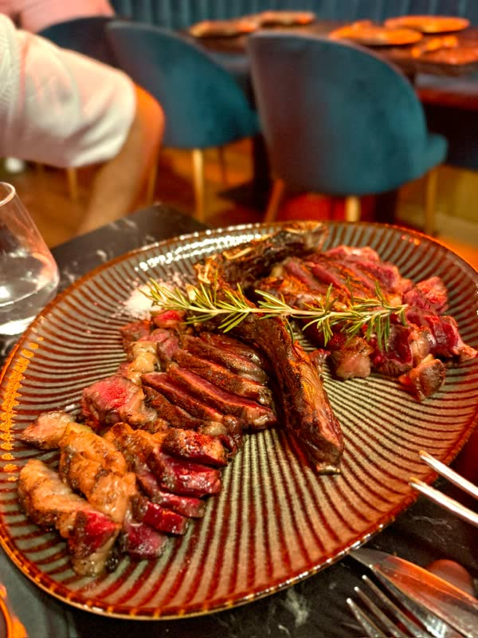
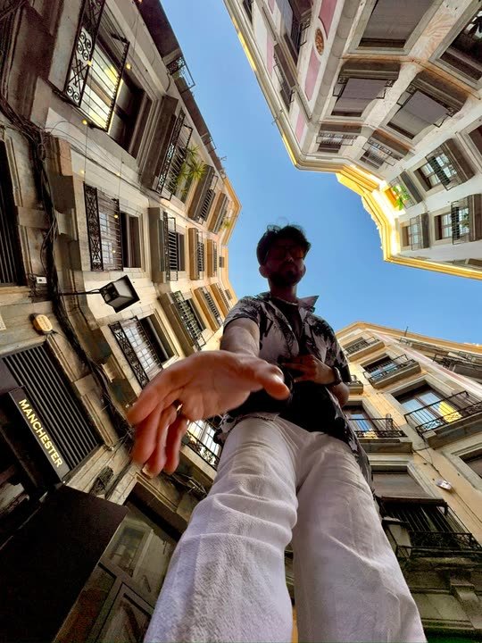

754 test cases, every one passed
I led UAT and the Go/No-Go for Honda's move of its core contact centres to Salesforce Lightning. It went live on October 5, 2026, and the old Classic system was retired on schedule 17 days later.
Photo: Ashwin on the Brooklyn Bridge at dusk.
AI Product Owner at Honda Canada · Toronto
I turn slow, manual operations into systems that run themselves.
I Now
Since June 2026 I've been the AI Product Owner in Information Technology at Honda Canada, owning delivery across the contact-centre modernization program and our AI initiatives.
754 test cases, every one passed
I led UAT and the Go/No-Go for Honda's move of its core contact centres to Salesforce Lightning. It went live on October 5, 2026, and the old Classic system was retired on schedule 17 days later.
83 user stories from 19 legacy call flows
For the telephony move to NICE CXone, I turned every call flow into plain-language stories with bilingual acceptance criteria, so business reviewers could sign off in one pass on a single 59-story pack.
52% lower annual cost projection
While building cost models for platform enhancements, I caught a pricing error that had roughly doubled one feature's estimate. With accurate figures, leadership approved all three features into the annual budget.
Adopted as the team's way to write requirements
I built a repeatable method for generating UI mockups straight from user stories with Microsoft 365 Copilot. After a demo to the product team, it became part of how we produce requirements.
II Proof
120 min
Before: 120 minutes. After: under 5 minutes.
3 days
Before: 3 days. After: 2 days.
Your scroll just did what the work did.
III Before
Jun 2026 to now
Own delivery across the contact-centre modernization program and AI initiatives, from discovery and requirements through approvals, UAT, go-live and decommissioning. Led the Salesforce Lightning go-live: 754 test cases, every one passed, with the old system retired on schedule.
Jul 2023 to May 2026
Owned the roadmap for internal tools and cloud services covering 10,000+ enterprise servers, from first idea to launch. Brought statistical anomaly detection onto the roadmap, built SQL and Power BI dashboards that caught fleet-wide risk early, and ran quarterly business reviews with senior leadership against success metrics agreed up front.
Jan to Aug 2022
Dug through fleet data in Dynatrace and Splunk to find systemic risks, then turned them into tooling requirements for the automation roadmap. Designed the observability workflows that took incident resolution from 120 minutes to under 5.
May to Dec 2021
Led the program that moved physical inventory operations onto one digital planning system (Node.js, React), deployed across 15 manufacturing sites. On-time delivery cycle times improved by 33%.
May to Aug 2019
Prepared and processed 52,000+ records with Python and NLP for model training.
2018 to 2023
Dean's List, 2021 to 2023. Entrance Scholarship.
IV Built
Python, NEAT neuroevolution
A game-playing agent trained by evolving neural networks rather than hand-coding rules. It reached a 92% win rate within 50 generations.
View on GitHubReact, A* and Dijkstra
An interactive tool that animates how search algorithms explore a grid, so you can watch A* and Dijkstra make different choices on the same maze.
View on GitHubV Off the clock
Badminton and indoor soccer.
Glass, light and the geometry of cities.
Always looking for the next good table.

